Abstract
Electricity use by data centres was about 415 TWh in 2024, roughly 1.5 % of world demand. The International Energy Agency (IEA) expects it to more than double to about 945 TWh by 2030, with demand from AI-focused facilities roughly tripling [1], [2]. Demand grew by 17 % in 2025 alone, against 3 % for electricity as a whole [3]. Power plants, transmission lines and grid connections take far longer to build than data halls, so the surge arrives as a local crunch: connection queues, delayed projects and strained city grids. This paper asks a practical question: how much of the surge can be absorbed by running existing and new data centres better, and by upgrading them, before new supply is needed? The facility is treated as a chain of five layers, namely software and models, IT hardware, cooling, power delivery and the grid connection, and the main levers in each are quantified with worked calculations. These cover power usage effectiveness (PUE), fan and pump affinity laws, chiller performance against chilled-water temperature, losses in each power-conversion stage, 800 V DC distribution, idle servers, server consolidation, demand flexibility, heat reuse and water use. A separate section applies the same arithmetic to India, where capacity has grown from 375 MW in 2020 to about 1.8 GW and is heading above 4 GW by 2030, with Chennai as the second hub. The global average PUE has been almost flat at about 1.54 for six years [4], so a large part of the fleet runs well below what is already proven. Lifting the fleet to a PUE of 1.30 alone would cut total consumption by 15.6 %. Combining the levers, the author's indicative estimate is that a determined efficiency push could take 170 to 345 TWh out of the 2030 projection, which is one-third to two-thirds of the expected growth. Efficiency cannot replace new clean supply, but it buys time, frees grid capacity and lowers cost. The paper ends with a retrofit road map, recommendations for operators and policy makers, and the caveat that cheaper computation also invites more of it.
Index Terms—Data centres, electricity demand, artificial intelligence, power usage effectiveness, liquid cooling, chiller efficiency, affinity laws, 800 V DC, UPS, server utilisation, demand flexibility, waste-heat reuse, water usage effectiveness, India, Chennai.
1. Introduction
Every search, video call, payment and AI answer runs on a server in a data centre. Each such building is a large, steady electrical load: it draws power around the clock, converts nearly all of it into heat, and then spends more electricity removing that heat. For a decade this load grew slowly. Efficiency gains in servers, virtualisation and the move to large cloud facilities kept total consumption almost flat while computing output rose many times over. That balance has now broken. Training and serving large AI models needs racks of accelerators that draw many times the power of a conventional server rack, and investment in such capacity has risen faster than at any time in the industry's history [2], [5].
The public discussion of this surge usually turns to the supply side: new gas turbines, nuclear restarts, small modular reactors, renewable power purchase agreements. These matter, but they are slow. A data hall can be built in two to three years, whereas generation and transmission take longer to plan, approve and build [6]. The IEA estimates that about one-fifth of planned data-centre projects could face delays unless grid constraints are addressed [1], [7]. In the meantime, the fastest and cheapest source of "new" capacity is the electricity that data centres already draw but do not turn into useful computation.
The question this paper addresses is therefore one of engineering accounting. Of each kilowatt-hour a data centre takes from the grid, how much does useful work, how much is lost on the way, and how much of that loss can be recovered by better operation and by upgrades? And when the answers are added up across the world's fleet, how much of the projected growth do they offset? The approach is that of a mechanical and instrumentation engineer rather than a computer scientist. Cooling plants, pumps, fans, chillers, transformers and converters are machines with known performance laws, and much of the waste in data centres is the familiar waste of any industrial plant: oversized equipment run at part load, fixed-speed drives, poor set points, fouled heat exchangers and machines left running with nothing to do.
The paper is organised as follows. Section 2 sets out the size and shape of the surge. Section 3 explains the metrics, chiefly PUE, and why the global average has stalled. Sections 4 to 8 work through the five layers of Figure 1, from software down to the grid connection, each with worked calculations. Section 9 deals with heat reuse and water. Section 10 applies the analysis to India and Chennai. Section 11 describes the metering and monitoring on which all of this depends. Section 12 gives a retrofit road map for existing sites, with a worked case for a Chennai colocation hall. Section 13 combines the levers into an estimate of how much growth efficiency can absorb, and sets out what efficiency cannot do. Section 14 gives recommendations and Section 15 concludes. All calculation inputs are stated; values marked as assumed are typical engineering figures rather than measurements of any particular site, and the scripts that produce every number and chart are kept with the paper's sources.
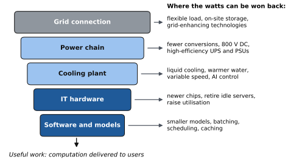
2. The Size and Shape of the Surge
2.1 Global numbers
The IEA's 2025 special report Energy and AI put data-centre electricity use at about 415 TWh in 2024, roughly 1.5 % of global consumption, having grown at about 12 % a year over the previous five years [6]. In its Base Case, consumption rises to about 945 TWh by 2030, a little more than Japan's present total use and just under 3 % of world electricity, and to about 1,200 TWh by 2035 [1]. The agency's April 2026 update, Key Questions on Energy and AI, kept the central projection close to that path but recorded that consumption rose by 17 % in 2025 and that consumption in AI-focused data centres rose by about half in that one year [2], [3], [5]. Its World Energy Outlook of November 2026 puts 2030 consumption at up to about 1,000 TWh under stated policies [8]. Figure 2 shows the path.
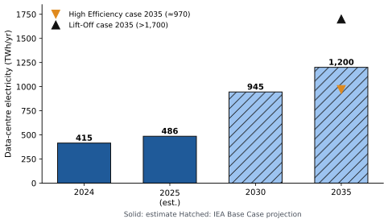
Two numbers help to make the scale tangible. Consumption of 945 TWh a year is an average load of about 108 GW, against about 47 GW in 2024. The rise from 2024 to 2030 is therefore about 530 TWh, equivalent to adding some 60 GW of round-the-clock load in six years, a compound growth rate of 14.7 % a year. The spread between the IEA's sensitivity cases is also instructive. In 2035 the High Efficiency case is about 970 TWh and the Lift-Off case more than 1,700 TWh [6]. The difference between those two futures, more than 700 TWh, is larger than total data-centre use today. Efficiency is therefore not a side issue in the projections; it is one of the main variables.
| Quantity | Value | Source |
|---|---|---|
| Global consumption, 2024 | ≈415 TWh (≈1.5 % of world electricity) | [1] |
| Growth in 2025 | +17 % (all electricity: +3 %) | [3] |
| IEA Base Case, 2030 | ≈945 TWh (just under 3 %) | [1] |
| IEA Base Case, 2035 | ≈1,200 TWh | [1] |
| Share of 2024 use: United States / China / Europe | 45 % / 25 % / 15 % | [1] |
| Servers' share of a modern data centre's use | ≈60 % on average | [6] |
| Cooling share of a data centre's use | ≈7 % (efficient hyperscale) to over 30 % (less efficient) | [6] |
| Global average PUE, 2025 / 2026 surveys | 1.54 / 1.52 | [4], [9] |
| Data-centre share of global demand growth to 2030 | ≈10 % | [1] |
2.2 Why AI changes the character of the load
The surge is not just more of the same. Three features of AI computing change the engineering problem. The first is power density. Conventional air-cooled racks were designed for kilowatts each. Racks of AI accelerators now exceed 200 kW, and the power industry is preparing for racks of 1 MW from 2027 [10]. At such densities air cannot carry the heat away, and the low-voltage distribution inside the rack runs into the limits of copper. The second is load shape. An AI training cluster works as one synchronous machine, so thousands of accelerators ramp up and down together, unlike a conventional facility running thousands of unrelated tasks whose fluctuations average out [11]. The grid then sees large, fast swings instead of a flat load. The third is location. Data centres cluster where fibre, land and power are available, so their impact on local grids is far larger than their global share suggests. The IEA notes that a typical AI-focused data centre uses as much electricity as 100,000 households, and that the largest under construction will use twenty times as much [1].
2.3 Where the surge bites
The constraint is rarely the world's total generating capacity; it is the local connection. A 300 MW campus needs a high-voltage substation, a transmission path with spare capacity and enough firm generation in the region at peak hours. Each takes years to provide. In the United States, where data centres are expected to account for almost half of electricity demand growth to 2030 [1], grid operators have long queues of large-load connection requests. In Mumbai, data centres already draw about 250 MW, around 5 % of the city's peak demand [12]. India's main hubs, Chennai among them, are already reported to be straining under power and water limits [13]. The surge is thus best seen as a race between the speed of digital construction and the speed of electrical construction. Every megawatt saved inside existing fences narrows that gap.
2.4 A sense of proportion
It is worth keeping perspective. The IEA expects data centres to account for only about one-tenth of global electricity demand growth to 2030, less than industrial motors, air conditioning or electric vehicles [1], [14]. The lessons in this paper therefore apply well beyond data centres; motors, fans, pumps and chillers dominate all of those other loads too. But data centres are unusual in three ways that make efficiency especially valuable: they run at high load factor all year, their growth is concentrated in a few places, and their owners are large, technically capable companies that can act quickly.
3. Measuring What Matters: PUE and Beyond
3.1 Power usage effectiveness
The standard measure of facility efficiency is power usage effectiveness, defined by The Green Grid and standardised as ISO/IEC 30134-2 [15]:
PUE = Efacility / EIT (1)
where Efacility is the total annual energy entering the site and EIT is the energy delivered to IT equipment (servers, storage and network). A PUE of 1.0 would mean that every kilowatt-hour reaches the IT equipment; a PUE of 2.0 means that cooling, power conversion, lighting and other overheads use as much as the IT itself. The share of site energy lost to overhead is
foverhead = (PUE − 1) / PUE (2)
and, for the same IT work, the fractional saving in total energy when PUE improves from PUE1 to PUE2 is
S = 1 − PUE2 / PUE1 (3)
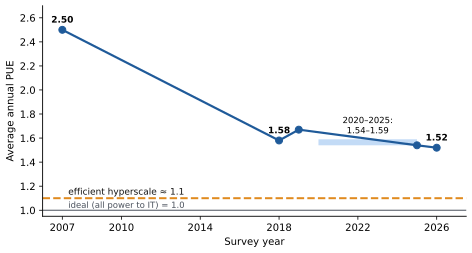
3.2 The stalled average
Figure 3 tells an uncomfortable story. Average PUE fell quickly in the decade to 2018 as operators adopted hot- and cold-aisle containment, raised temperatures and built large, purpose-designed facilities. It then stopped improving. The Uptime Institute's 2025 survey of more than 800 operators found a weighted average of 1.54 for the sixth year in a row [4], [17]; the 2026 survey reported 1.52, with larger facilities pulling ahead [9]. The flat average hides a wide spread: new hyperscale campuses operate near 1.1 to 1.2, while many older enterprise and colocation rooms still run at 1.7 to 2.0; the US Federal Energy Management Program still treats 2.0 as the PUE of a data centre of average efficiency [18]. The average is held up by this long tail of older sites. Figure 4 shows what the spread means for where each unit of electricity goes.
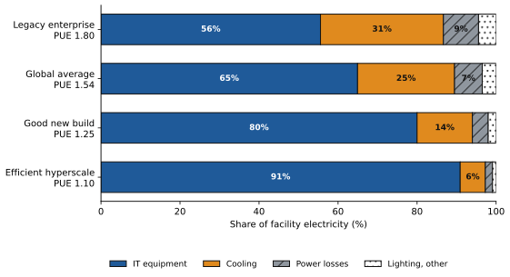
WORKED EXAMPLE 1 — What the stalled average costs
At PUE 1.54, by (2) the overhead is 0.54/1.54 = 35.1 % of site energy. At 1.30 it is 23.1 %.
For the 2024 global fleet: EIT = 415/1.54 = 269.5 TWh. At PUE 1.30 the same IT work would need 269.5 × 1.30 = 350.3 TWh. The saving is 415 − 350.3 = 64.7 TWh a year, or 15.6 % by (3). Lifting the fleet to 1.20 would save 22.1 %.
For a single 10 MW IT hall, PUE 1.54 instead of 1.30 costs 10 × 0.24 × 8,760 = 21,000 MWh a year, enough to supply roughly 2.4 MW of extra IT load at the better PUE without any new grid connection.
3.3 The limits of PUE
PUE is useful but easily misread. It is a ratio, so it says nothing about whether the IT equipment does useful work. A room of idle servers at PUE 1.2 is far more wasteful than a busy room at PUE 1.5. PUE also depends on where the boundary of "IT" is drawn. Server fans are counted as IT load, so when direct liquid cooling removes most of the server fans, IT power falls and PUE can rise even though total power falls. The joint Vertiv and NVIDIA study of a hybrid air-and-liquid-cooled facility found exactly this: moving 75 % of the heat load to direct-to-chip cooling cut total site power by 10.2 % while PUE changed by only 3 % [19]. PUE also varies with climate and season, so comparisons between sites in Chennai and in Sweden are of limited meaning. It ignores water, which can be traded against electricity (Section 9), and it ignores the carbon content of the electricity used.
3.4 Metrics of useful work
What society actually wants is computation delivered per unit of energy: queries answered, models trained, transactions processed, per kilowatt-hour. Such metrics are harder to standardise because workloads differ, but they are the ones that capture the largest savings. Table 2 lists the main metrics in use and what each captures.
| Metric | Definition | What it captures | What it misses |
|---|---|---|---|
| PUE | Site energy / IT energy | Cooling and power-chain overhead | Whether the IT does useful work; water; carbon |
| WUE | Site water (L) / IT energy (kWh) | Water drawn for cooling | Water used to generate the electricity |
| CUE | Site CO₂ / IT energy | Carbon intensity of supply | Embodied carbon in equipment |
| Server utilisation | Average busy fraction of CPUs or accelerators | Idle and over-provisioned capacity | Efficiency of the software running |
| Energy per task | Wh per query, per token or per training run | End-to-end efficiency of hardware and software | Hard to compare across different workloads |
| Heat reuse factor | Heat exported / site energy | Value recovered from waste heat | Temperature (quality) of the heat |
4. Software and Models: The Cheapest Watts
The least visible layer offers the largest savings, because a watt not used by a processor is also a watt that need not be converted, distributed or cooled. Software efficiency is also the layer where progress has been fastest. The IEA found that, measured per AI task, energy use has dropped by at least an order of magnitude a year in recent years, a rate of improvement it describes as unprecedented in energy history [2]. Independent and company measurements now put the median energy of a simple text query to a large model at about 0.24 to 0.34 Wh, about as much as a microwave oven uses in one second [20], [21]. A bottom-up study by Microsoft researchers estimated a median of 0.31 Wh per query for optimised frontier-scale serving and found that recent improvements in model design, serving software and hardware could together reduce energy use by 8 to 20 times [22].
The difficulty is that demand is shifting to much heavier uses. Reasoning models, video generation and "agentic" systems that work through many steps can use hundreds or thousands of times more energy per request than simple text generation [2]. AI's energy demand is therefore the net of three fast and uncertain trends: efficiency per task, the number of users, and the energy intensity of the tasks they choose. Software efficiency is the lever operators control most directly. Table 3 lists the main techniques.
| Lever | How it saves energy | Typical effect | Trade-off |
|---|---|---|---|
| Smaller or distilled models | Route easy requests to a small model; keep the large model for hard ones | Several-fold per routed request | Needs a good router; quality checks |
| Quantisation (8-bit, 4-bit) | Fewer bits moved and multiplied per operation | Large cut in memory traffic and energy per token | Small accuracy loss if done badly |
| Batching and continuous batching | Keeps accelerators busy; spreads fixed power over more requests | Large rise in tokens per joule | Slightly higher latency |
| Caching of prompts and results | Avoids recomputing repeated context | Proportional to repeat rate | Memory use |
| Limits on reasoning length | Stops unnecessary long chains of thought | Proportional to tokens avoided | Must not cut needed reasoning |
| Carbon- and grid-aware scheduling | Moves deferrable training and batch jobs to hours of surplus power | No energy saving; lowers peak and carbon | Needs flexible deadlines |
| Efficient code and data | Removes redundant jobs, copies, logging and retention | Varies; often large in older estates | Engineering time |
For an operator, the practical message is that energy per useful output should be measured and reported alongside latency and accuracy. A service that answers the same questions with one-third of the tokens, or on a model one-tenth the size, saves energy at every layer below it.
WORKED EXAMPLE 2 — Routing, and how a change in the mix can swamp it
Assume a service answers one billion text queries a day at 0.3 Wh each [22]: 3 × 108 Wh = 300 MWh a day, an average IT load of 12.5 MW.
Routing: if 70 % of queries can be answered by a small model using one-tenth of the energy (assumed), the average becomes 0.3 × 0.3 + 0.7 × 0.03 = 0.111 Wh, a cut of 63 %, to 4.6 MW.
Mix: if instead 10 % of queries turn into agentic tasks using 100 times the energy of a simple query (the lower end of the range reported by the IEA [2]), the average becomes 0.9 × 0.3 + 0.1 × 30 = 3.27 Wh, almost eleven times the original. A modest shift in what users ask for outweighs a large gain in how efficiently each request is served. This is why AI's total demand can grow fast even while energy per task falls fast.
5. IT Hardware and Utilisation
5.1 Servers that do nothing
A surprisingly large share of servers in conventional data centres do no useful work at all. A study by Koomey and Taylor using monitoring data from about 4,000 physical servers found that 30 % were "comatose", meaning they had delivered no computing service for six months or more; a later study of 16,000 servers put the figure at 25 % of physical and 30 % of virtual servers [23], [24]. Earlier work by McKinsey and the Uptime Institute had found similar shares [23]. The cause is managerial, not technical: servers are installed for projects that end, nobody is sure what they do, and switching them off feels risky. Such servers still draw their idle power, typically about half of their full-load power, and still need cooling.
WORKED EXAMPLE 3 — Idle servers in an enterprise data centre
Assume an enterprise site with 4,000 servers, of which 25 % are comatose, each drawing an idle power of 180 W, at a site PUE of 1.7 (typical of older rooms).
IT load of idle servers = 1,000 × 180 W = 180 kW. Site load = 180 × 1.7 = 306 kW.
Annual energy = 306 × 8,760 = 2,681 MWh. At an assumed tariff of ₹8/kWh this is about ₹2.1 crore a year, spent on computers that do nothing. Finding and removing them needs only an inventory, traffic monitoring and a decommissioning process.
5.2 Utilisation and energy proportionality
Servers that are in use are often lightly loaded. A server's power rises roughly linearly with utilisation from a substantial idle floor, so a server at low utilisation uses far more energy per unit of work than one at moderate load. A simple linear model is
P(u) = Pidle + (Pmax − Pidle) u (4)
where u is utilisation between 0 and 1. The energy per unit of work is P(u)/u, which rises steeply as u falls (Figure 5).
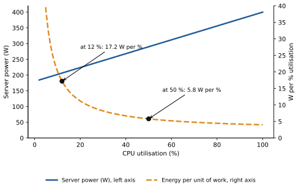
WORKED EXAMPLE 4 — Consolidation by virtualisation
100 servers run at an average utilisation of 12 %. By (4), each draws 180 + 220 × 0.12 = 206.4 W, a total of 20.64 kW.
The total work is 100 × 0.12 = 12 server-equivalents. Consolidated onto hosts running at 50 %, it needs 12/0.5 = 24 servers, each drawing 180 + 220 × 0.5 = 290 W, a total of 6.96 kW.
The IT power falls by 66 %, before counting the cooling and conversion losses that also disappear. If the 24 hosts are also replaced by a newer generation with twice the work per watt, the saving exceeds 80 %.
5.3 Hardware refresh and power management
Each new generation of processors and accelerators does more work per watt, so retiring old equipment is an efficiency measure in its own right. The decision balances operating energy saved against the embodied energy and cost of the new hardware; for servers that run continuously, a refresh cycle of four to six years is commonly judged to pay off. Other hardware-level measures are cheaper still: enabling processor power-saving states that many operators disable out of caution, capping the power of accelerators at a point slightly below their maximum (where performance per watt is usually best), and right-sizing storage tiers so that rarely used data sits on low-power media.
For AI clusters the equivalent of utilisation is keeping expensive accelerators busy. An idle accelerator still draws a large share of its rated power, and the cooling and power plant sized for its peak still runs. Good scheduling, sharing of clusters between teams and early detection of failed or stalled jobs therefore matter as much as the choice of chip.
6. Cooling: The Largest Overhead
Cooling is the largest share of the overhead in almost every data centre. The IEA estimates it at about 7 % of consumption in efficient hyperscale facilities and more than 30 % in less efficient ones [6]. A cooling plant is a collection of rotating machines (fans, pumps, compressors and cooling-tower drives) joined by heat exchangers. Its efficiency is governed by well-known laws, and its waste is the familiar waste of any industrial utility plant. This section works through the plant from the server inlet outward.
6.1 Airflow and set points
The first savings come before any machine is changed. In an air-cooled room, hot exhaust air that recirculates to server inlets forces the cooling units to supply colder air than the servers need. Blanking panels in empty rack slots, sealed cable cut-outs, and containment of hot or cold aisles separate the two streams, so the supply temperature can be raised. ASHRAE Technical Committee 9.9 recommends server inlet temperatures between 18 and 27 °C for normal operation [25], [26]. Many rooms still run at 20 °C or below out of habit. ENERGY STAR estimates that each degree of increase in inlet temperature can save up to about 4 % of cooling energy, and vendors quote 4 to 5 % per degree of return-air temperature, chiefly because chillers run at higher evaporating temperatures and economisers can run for more hours [27], [28]. There is a limit: above the recommended range server fans speed up and IT power rises, especially in high-density rooms, so the optimum is near the top of the recommended range rather than beyond it [27].
6.2 Fans, pumps and the affinity laws
Fans and pumps in data centres are usually selected for the design peak plus redundancy, and spend most of their lives at part load. For a centrifugal fan or pump at constant efficiency, flow Q, pressure (or head) H and shaft power P scale with speed N as
Q ∝ N, H ∝ N2, P ∝ N3 (5)
The cube law is what makes variable-speed drives so effective: 80 % of design speed needs only 0.83 = 51 % of design power. When flow is controlled instead by throttling valves or dampers at full speed, most of that saving is thrown away. For pumps working against a fixed static head Hs (for example, lifting water to the top of a cooling tower), the system curve is H = Hs + kQ2, and the saving is smaller, as Figure 6 shows.
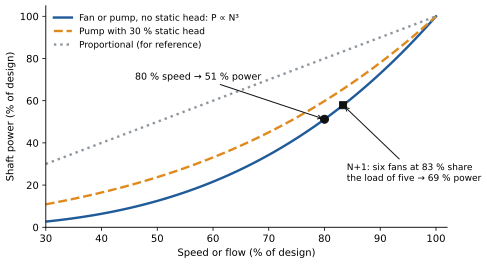
WORKED EXAMPLE 5 — Run the redundant fans, slowly
A 10 MW IT hall has air-handling fans rated at 6 % of IT load (assumed), i.e. 600 kW, arranged N+1: six units, of which five can carry the full airflow.
The common practice is to run five at full speed and keep one on standby. If instead all six run, each carries 5/6 of its design flow at 5/6 of its speed. By (5), total power = 6 × (5/6)3 / 5 = (5/6)2 = 0.694 of the original, a 30.6 % cut. Redundancy is kept, because if one unit fails the other five speed up.
Annual saving = 600 × 0.306 × 8,760 = about 1,600 MWh, before counting the fan heat that no longer needs to be removed.
For a chilled-water pump with 30 % static head, reducing flow to 70 % gives P/P0 = 0.7 × (0.3 + 0.7 × 0.72) = 0.45, compared with 0.34 from the pure cube law. The saving is still 55 %, and resetting the differential-pressure set point to what the furthest load actually needs is what unlocks it.
6.3 Chillers and the case for warmer water
Mechanical chillers are the biggest single electrical load in a conventional cooling plant. The ideal (Carnot) coefficient of performance of a refrigeration cycle depends only on the evaporating and condensing temperatures Te and Tc in kelvin:
COPCarnot = Te / (Tc − Te) (6)
Real chillers reach a fraction of this, roughly half for a good centrifugal machine at its design point (assumed here). Equation (6) shows why warm chilled water saves so much: raising Te narrows the temperature lift Tc − Te, which is in the denominator. The traditional chilled-water supply of 6 to 7 °C dates from comfort air conditioning, where the coil must also remove moisture. Servers need no dehumidification of that kind, and with good containment, water at 15 to 20 °C is enough (Figure 7).
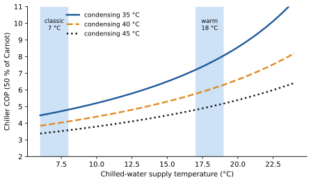
WORKED EXAMPLE 6 — Raising chilled water from 7 to 18 °C in Chennai
Condensing temperature 40 °C (313.15 K), typical of a water-cooled chiller with a cooling tower in Chennai's humid summer. Evaporating temperature 5 °C for 7 °C water, 16 °C for 18 °C water.
By (6): COPCarnot = 278.15/35 = 7.95 at 5 °C and 289.15/24 = 12.05 at 16 °C. At 50 % of Carnot the real COP is 3.97 and 6.02.
To remove 10 MW of heat: compressor power = 10,000/3.97 = 2,517 kW at 7 °C water, and 10,000/6.02 = 1,660 kW at 18 °C water. The saving is 857 kW, or 34 %, about 3.7 % per kelvin, consistent with the rule of thumb of a few per cent per degree. Warmer water also lets the plant run on free cooling for more hours of the year.
The condenser side matters as much as the evaporator side. Every kelvin by which the condensing temperature falls also raises COP. The condensing temperature is set by the cooling-tower approach (leaving-water temperature minus ambient wet-bulb), the condenser approach and the cleanliness of the tubes. Scale and biological fouling in condenser tubes, poorly maintained tower fill and nozzles, and fixed-speed tower fans all push it up. These are maintenance problems with energy consequences, which leads naturally to Section 6.7.
6.4 Liquid cooling
Above about 40 to 50 kW per rack, air cannot remove heat at reasonable fan power and noise, and at 100 kW and above liquid cooling is no longer optional. Two forms dominate. In direct-to-chip cooling, cold plates on the processors and accelerators carry water or a water–glycol mixture from a coolant distribution unit (CDU); about 75 % of a server's heat can be removed this way, the rest still by air [19]. In immersion cooling, whole servers sit in a dielectric fluid. Water and other liquids carry several thousand times more heat per unit volume than air, so pumps replace most fans, and the coolant can be returned much warmer.
The NVIDIA and Vertiv study cited in Section 3.3 quantified the gain in a 1 to 2 MW high-density facility. Moving from 100 % air cooling to 74.9 % direct-to-chip cooling, together with the warmer chilled-water, supply-air and secondary-loop temperatures that liquid cooling allows, cut facility power by 18.1 % and total data-centre power by 10.2 % [19]. The largest benefit of liquid cooling, however, is the temperature at which heat leaves the building. ASHRAE's liquid-cooling classes allow facility water supplied at up to 32, 40 or 45 °C and beyond (classes W32 to W45 and W+) [26]. At those temperatures heat can be rejected by dry coolers without any compressor for most or all of the year, even in a hot climate, and the return water is warm enough to be useful (Section 9).
6.5 Free cooling in a hot, humid climate
"Free cooling" means rejecting heat directly to outdoor air or water without running a compressor. In Northern Europe air-side economisers can run for most of the year. In Chennai, where the annual mean temperature is close to 29 °C and the wet-bulb temperature is high for much of the year, air-side economisers for conventional 7 °C chilled water are of little use. This is where warm-water liquid cooling changes the picture. A dry cooler with an approach of about 5 K can deliver 45 °C water whenever the air is below about 40 °C, which in Chennai covers nearly all hours of the year, leaving only small trim chillers for the hottest afternoons. For tropical sites, therefore, liquid cooling is not only a density solution but also the main route to chiller-free operation.
Evaporative cooling is the other tropical option. It lowers peak cooling power substantially, by 25 to 35 % in summer compared with dry cooling in one recent analysis, but it does so by evaporating water on precisely the hottest days, when water and grid stress are highest [29]. In a water-stressed city this trade-off has to be made explicitly (Section 9.3).
6.6 Intelligent control
A cooling plant has many interacting set points: supply temperatures, pump pressures, number of chillers and towers in service, fan speeds. Each is usually set conservatively and left alone. In 2016 Google reported that a machine-learning system trained on years of sensor data, recommending set points to operators, consistently reduced the energy used for cooling by 40 %, equivalent to a 15 % reduction in the PUE overhead [30]. The lesson for smaller operators is not that they need DeepMind, but that most plants run far from their optimum, and that systematic, data-driven tuning of set points recovers a large part of the gap. Even simple measures, such as sequencing chillers by measured efficiency, resetting supply temperatures with load and weather, and shutting surplus towers and pumps, capture much of it.
6.7 Condition monitoring of the cooling plant
A point often missed in data-centre efficiency studies is that machines lose efficiency long before they fail. A pump running with a worn impeller, a misaligned coupling or a failing bearing still delivers flow, so the building management system shows nothing wrong, but it draws more power for the same duty. The same is true of a cooling-tower fan with an unbalanced or eroded blade, a gearbox with worn teeth, or a centrifugal chiller compressor with a degraded bearing. Condition monitoring, long standard in process plants, power stations and aerospace test facilities, is therefore an efficiency tool as well as a reliability tool. Table 4 lists common faults, their energy symptoms and how to detect them.
| Machine | Fault | Energy symptom | Detection |
|---|---|---|---|
| Pumps | Impeller wear, recirculation, operation far from best-efficiency point | More kW for the same flow and head | Vibration at vane-pass frequency; kW per (m³/h · m) trend |
| Pumps, fans | Misalignment, unbalance, soft foot | Extra bearing and coupling losses; higher motor current | Vibration at 1× and 2× running speed; thermography |
| Rolling bearings | Wear, poor lubrication | Friction losses; heat | Bearing defect frequencies; envelope analysis; temperature |
| Cooling-tower fans and gearboxes | Blade erosion, wrong pitch, gear wear | Less airflow per kW; higher tower approach | Vibration at gear-mesh frequency; approach-temperature trend |
| Chillers | Condenser fouling, low refrigerant charge, non-condensable gases | Higher condensing temperature; higher kW per kW of cooling | Condenser approach trend; kW/TR against design curve |
| Heat exchangers and coils | Fouling, air locks | Larger approach; more pump or fan power | Temperature-difference and pressure-drop trends |
| Motors and drives | Insulation ageing, harmonic heating, wrong drive tuning | Higher losses; poor power factor | Current signature analysis; power-quality logging |
The economic logic is simple. A cooling plant serving 10 MW of IT load may draw 2 to 3 MW. If neglected faults raise that by only 5 %, the loss is 100 to 150 kW, around a thousand megawatt-hours a year, far more than the cost of the monitoring that would reveal it. Permanently installed accelerometers on critical pumps, fans and compressors, together with trended performance indices such as kW per tonne of refrigeration, approach temperatures and pump specific energy, turn maintenance from calendar-based to condition-based and keep the plant near its design efficiency.
7. Power Delivery: Fewer Conversions, Higher Voltage
7.1 The conversion chain
Electricity from the grid passes through a chain of conversions before it reaches the processor: medium-voltage to low-voltage transformation, the uninterruptible power supply (UPS), often a further transformer in the power distribution unit (PDU), the server power supply (AC to DC), and finally the voltage regulators on the board. The efficiency of the chain is the product of the stage efficiencies:
ηchain = ∏i ηi (7)
Because the stages multiply, small losses at each step add up, and every watt lost becomes heat that the cooling plant must also remove.
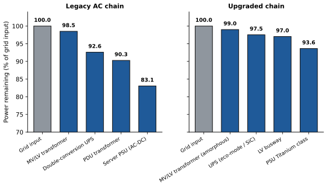
| Legacy chain | η | Upgraded chain | η |
|---|---|---|---|
| MV/LV transformer (conventional core) | 98.5 % | MV/LV transformer (amorphous core, right-sized) | 99.0 % |
| Double-conversion UPS at part load | 94.0 % | Modern UPS in eco-mode or SiC double conversion | 98.5 % |
| PDU transformer | 97.5 % | LV busway (no PDU transformer) | 99.5 % |
| Server PSU, older class | 92.0 % | Server PSU, Titanium class | 96.5 % |
| Chain | 83.05 % | Chain | 93.63 % |
WORKED EXAMPLE 7 — The cost of conversion losses at 100 MW
To deliver 100 MW to the server boards, the legacy chain must draw 100/0.8305 = 120.4 MW from the grid; the upgraded chain draws 100/0.9363 = 106.8 MW.
Difference = 13.6 MW, or about 119 GWh a year. The losses also appear as heat; at a cooling overhead of 0.25 kW per kW of heat (assumed), a further 3.4 MW of cooling power is avoided.
The individual steps look small: 0.5 % here, 4.5 % there. Together, across the global fleet, they are worth tens of terawatt-hours a year.
Several upgrades are routine. Modern modular UPS systems keep each module near its efficient load point instead of running a large unit lightly loaded, and many can run in an eco-mode in which the inverter is bypassed while the grid is healthy, transferring within milliseconds when it is not. Silicon-carbide power semiconductors raise double-conversion efficiency. Amorphous-core transformers cut the no-load losses that a lightly loaded transformer incurs all day. Higher-efficiency server power supplies, now widely available, remove a few per cent at the very end of the chain where it is most valuable.
7.2 800 V DC distribution
The most radical change now under way is to abandon AC distribution inside the building. AI racks today typically distribute 54 V DC from rack-mounted power shelves to the compute trays. As racks pass 200 kW, the currents and the copper this needs become impractical [10]. NVIDIA and its power partners therefore propose to convert 13.8 kV AC directly to 800 V DC at the edge of the building with industrial rectifiers, removing most intermediate stages. They state that, compared with 415 V AC distribution, an 800 V DC busway carries 85 % more power through the same conductor size and needs 45 % less copper, with full production planned to coincide with megawatt-class racks in 2027 [10], [11]. The physics can be checked with a simple calculation.
WORKED EXAMPLE 8 — Why higher voltage cuts copper and losses
Deliver 1 MW. With 415 V three-phase AC at power factor 0.95: I = 106/(√3 × 415 × 0.95) = 1,464 A in each of three conductors. With 800 V DC: I = 106/800 = 1,250 A in each of two conductors.
With the same resistance R per conductor, the losses are 3I2R for AC and 2I2R for DC. Ratio = 2 × 1,2502 / (3 × 1,4642) = 0.49: about half the conductor loss, using two-thirds of the conductors.
Inside a 200 kW rack, 54 V DC means 3,704 A; 800 V DC means 250 A. For the same busbar resistance, I2R losses fall by (800/54)2 ≈ 219 times. This, rather than any exotic technology, is why the industry is moving to higher voltage.
DC distribution brings its own engineering challenges, chiefly protection (DC arcs do not self-extinguish at a current zero as AC arcs do), safety standards and a new supply chain. But it also integrates naturally with batteries and solar generation, both of which are DC sources, and with the fast power-smoothing that synchronous AI loads need.
8. Working With the Grid
The previous sections reduce the energy a data centre uses. This section concerns its peak demand on the grid and its timing, which is often the binding constraint on connecting new capacity.
8.1 Flexible load
Grids are sized for the few hours of peak demand each year. For the rest of the year much of their capacity is idle. A study by Duke University's Nicholas Institute examined the 22 largest balancing authorities in the United States, serving 95 % of the grid. It estimated that 76 GW of new large load could be connected without new generation or transmission if the new loads accepted curtailment for 0.25 % of their annual operating hours, rising to about 98 GW at 0.5 % and 126 GW at 1 %, with an average curtailment event lasting about two hours [31], [32]. For comparison, total global data-centre capacity is of the order of 100 GW [33].
WORKED EXAMPLE 9 — How much curtailment is that?
0.25 % of 8,760 h = 21.9 hours a year; 0.5 % = 43.8 h; 1 % = 87.6 h. At an average of two hours per event, the 0.25 % case is about eleven events a year, mostly on summer or winter peak days.
A 100 MW campus that must cut 25 MW for up to four hours without disturbing its computing needs a battery of 25 × 4 = 100 MWh, or can achieve the same by pausing deferrable training and batch jobs, or by a mix of the two.
The study is a first-order estimate, and critics point out that many data-centre contracts and workloads are not designed to be interrupted, so the full headroom will not be realised automatically [34]. But the principle is sound. AI training jobs checkpoint their progress and can pause; batch analytics can wait; even inference can be shifted between regions. On-site batteries, already installed for backup, can cover short events. A connection agreement that trades a small, bounded curtailment for a much faster connection is often attractive to both sides.
8.2 Storage and smoothing
Batteries in data centres have traditionally been sized for a few minutes of UPS autonomy. Larger battery systems can do much more: shave peaks, ride through curtailment events, absorb the rapid power swings of synchronous AI training, and provide frequency services to the grid. Because the grid sees a smoother, more predictable load, less network capacity has to be reserved. Lithium-ion and other modern batteries also replace part of the role of diesel generators, which run only for testing in most years but must be maintained and fuelled.
WORKED EXAMPLE 10 — Smoothing a synchronous training load
A 100 MW training cluster pauses all accelerators together at a checkpoint, and its load drops by 30 MW within about a second (assumed). Suppose the grid operator limits the ramp of a large load to 10 MW per minute (assumed). On-site storage must then absorb the difference and release the change gradually over 30/10 = 3 minutes.
Power rating needed = 30 MW. Energy shifted = ½ × 30 MW × 3 min = 45 MW·min = 0.75 MWh. The task needs high power for minutes, not energy for hours, which suits supercapacitors or batteries designed for high C-rates, and can share hardware with the UPS. Software can help too: staggering checkpoints across groups of accelerators, or briefly running dummy work to hold the load steady, reduces the swing at source.
8.3 More from the existing network
The IEA estimates that grid-enhancing technologies, which include dynamic line rating, advanced high-capacity conductors and power-flow control, could unlock up to 175 GW of transmission capacity without building new lines, more than the increase in data-centre load to 2030 in its Base Case [1], [7]. Dynamic line rating is a good example of the instrumentation approach: a line's safe rating depends on its conductor temperature, which in turn depends on wind and ambient temperature. Measuring these instead of assuming worst-case conditions typically reveals spare capacity on most days.
8.4 Siting
Not every computation needs to be done near its users. Training of large models, and much batch processing, tolerates latency and can be placed where clean power is abundant, the climate is cool or water is plentiful. Inference that must answer within milliseconds needs to be closer to users. Separating the two in planning, and steering the flexible portion to regions with surplus generation, eases the pressure on congested urban grids.
9. Heat and Water
9.1 Reusing the heat
Almost all the electricity a data centre uses ends up as low-grade heat. In cold countries that heat can warm homes. Meta's data centre at Odense, Denmark, passes water from the city's district-heating network through its cooling coils; large ammonia heat pumps then raise it to 70 to 75 °C for the network [35], [36]. The first phase was designed to recover 100,000 MWh a year, enough for 6,900 homes [35]; the expanded heat-pump plant, about 45 MW of heat, is designed to recover 215,000 MWh a year, and the heating company reports supplying the equivalent of about 11,000 households [36], [37]. Warm-water liquid cooling makes such reuse easier, because heat leaving the servers at 45 to 60 °C needs a smaller temperature lift.
WORKED EXAMPLE 11 — Heat from a 20 MW liquid-cooled campus
IT load 20 MW; 75 % captured in the liquid loop at about 45 °C, giving Qsrc = 15 MW. A heat pump lifting it to 70 °C with an assumed COP of 4 delivers
Qdel = Qsrc × COP / (COP − 1) = 15 × 4/3 = 20 MW (8)
for an electrical input of 5 MW. At 95 % availability that is about 166 GWh of heat a year, comparable to the Odense scheme. In a cold city this heat displaces gas or coal boilers; the data centre's electricity is then used twice.
9.2 Reusing heat in a hot country
In India there is no district heating, so the Odense model does not transfer directly. The heat still has uses. Adsorption chillers can be driven by water at about 55 to 65 °C with a COP of roughly 0.5 to 0.6 (typical values); 15 MW of recovered heat could then provide about 8 MW of cooling for neighbouring offices or for the data centre's own air-cooled loads. Industrial users near data-centre parks, such as laundries, food processing, textile pre-heating and the pre-heating of feed water for thermal desalination, can use low-grade heat directly. These uses need planning at the scale of the industrial park, which is a reason for state data-centre policies to encourage siting next to suitable heat users.
9.3 Water
Water usage effectiveness (WUE) is the annual site water consumption divided by the IT energy, in litres per kilowatt-hour [38]. Evaporative cooling systems typically use about 1,800 to 2,900 litres per megawatt-hour, that is 1.8 to 2.9 L/kWh [39]. Reported company averages are lower: Equinix reported 0.91 L/kWh across its sites in 2025 and 1.41 L/kWh at sites using evaporative cooling [40]. Lawrence Berkeley National Laboratory expects the US average site WUE to be about 0.45 to 0.48 L/kWh [41]. The European Climate Neutral Data Centre Pact sets maximum WUE values by climate and water stress, down to 0.4 L/kWh for potable water in areas of high water stress [42]. Closed-loop dry cooling uses almost no water at the site, at the cost of more electricity on hot days.
WORKED EXAMPLE 12 — Water for a 100 MW campus
IT energy = 100 MW × 8,760 h = 876,000 MWh a year.
At WUE 1.8 L/kWh: water = 876 × 106 kWh × 1.8 = 1,577 million litres a year, or 4.3 million litres a day. At the Indian urban supply norm of 135 litres per person per day [43], that is the daily water of about 32,000 people.
At WUE 0.4: 0.96 million litres a day. With closed-loop liquid cooling and dry coolers (WUE about 0.1): 0.24 million litres a day.
Water and electricity therefore have to be optimised together. In a water-stressed city the right choice may be dry cooling with a slightly higher PUE, using treated sewage water for any evaporative trim, rather than the lowest possible PUE bought with drinking water.
10. India and Chennai
10.1 Growth
India's data-centre industry is small by world standards but among the fastest-growing. Live capacity was about 296 MW in 2016 [44]. The Ministry of Electronics and Information Technology reports growth from 375 MW in 2020 to more than 1,500 MW in 2025 [45]; CBRE puts the end-2025 figure at about 1,700 MW after a record 440 MW was added in that year [46]. By mid-2026 the seven main markets had 1,789 MW in operation, 509 MW under construction and 3,351 MW at the planning stage, with about 3,860 MW of new capacity expected by 2030 [47]. Savills expects total capacity to exceed 4 GW by 2030 [48]. These capacities are IT power ratings; the electricity actually drawn depends on how fully the halls are loaded and on their PUE. S&P Global expects India's data-centre electricity demand to grow nearly fivefold to about 57 TWh by 2030, rising from 0.8 % of national demand in 2024 to about 2.6 %, and the Ministry of Power has estimated that data-centre demand could reach 13.6 GW by 2031–32 [49].
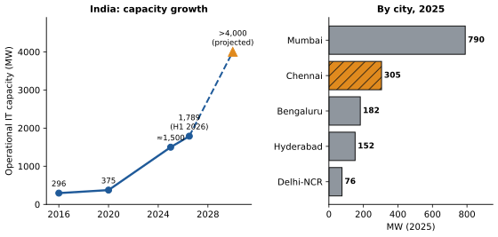
10.2 Chennai: the second hub
Mumbai holds about half of India's capacity, with about 790 MW in 2025; Chennai is second with about 305 MW [45], and Mumbai and Chennai together account for about 70 % of the market's annual absorption [48]. Chennai's advantage is connectivity: Tamil Nadu hosts more than 30 % of India's submarine cable landings [50]. Its constraints are water and, increasingly, power. Chennai has a long history of water scarcity, and local reporting has questioned whether the city can afford the water and power demands of a data-centre boom [51]. In 2026 the state's industries minister said that Tamil Nadu would not allocate scarce urban land, water and power to large conventional data centres, and that the state was "happy to say no to water-guzzling data centres" [52]. The state's new Sustainable Data Centre Policy 2026–2031 emphasises renewable energy, efficient electricity use, reimbursement of wheeling charges and resource mapping [53]. Nationally, India still has no data-centre policy with uniform efficiency and water benchmarks [54]. Power is also the largest operating cost: about 55 to 60 % of a typical Indian data centre's operating expenditure [12]. Efficiency is therefore both a public-interest issue and a direct business case.
10.3 Engineering for a hot, humid, water-stressed coast
The analysis of Sections 4 to 9 points to a distinct set of choices for Chennai and similar coastal cities (Table 6). The common thread is to move heat out of the building at as high a temperature as possible, so that it can be rejected without compressors or evaporated water, and to align flexible load with the hours when the state's renewable generation is plentiful.
| Local condition | Consequence | Preferred engineering choice |
|---|---|---|
| High dry-bulb and wet-bulb temperatures all year | Few hours of air-side free cooling at conventional temperatures | Warm-water liquid cooling (W32–W45) with dry coolers; chilled water at 15–20 °C for remaining air loads |
| Urban water stress | Evaporative cooling competes with drinking water | Closed-loop cooling; any evaporative trim on treated sewage water; WUE caps |
| Large solar and wind share in Tamil Nadu; evening peak | Midday surplus, evening shortage | Shift training and batch work to solar hours; batteries to cover the evening peak |
| Power is 55–60 % of operating cost | Every kWh saved is a direct saving | Condition monitoring and continuous performance tracking of the cooling plant |
| No district heating | Waste heat has no ready buyer | Adsorption cooling; co-location with industrial heat users in data-centre parks |
| Coastal salt air | Corrosion of outdoor coils and electronics | Coated coils; filtered or indirect air paths; liquid loops |
WORKED EXAMPLE 13 — India's fleet in 2030
India's projected data-centre demand in 2030 is about 57 TWh [49], an average load of 57,000/8,760 = 6.5 GW. No national average PUE is published; assume 1.6 for illustration.
Lifting the fleet average to 1.3 saves, by (3), 1 − 1.3/1.6 = 18.75 % = 10.7 TWh a year, an average of 1.22 GW. Supplied by coal at an 85 % plant load factor, that is the output of about 1.4 GW of coal capacity. A more modest improvement to 1.4 saves 7.1 TWh, equivalent to about 1 GW of coal capacity.
10.4 Chennai and the Tamil Nadu grid
Tamil Nadu's grid set a record peak demand of 21,724 MW on 14 July 2026, driven by heat and cooling demand [55]. The state is also one of India's renewable leaders: about 9.6 GW of solar and 12.3 GW of wind capacity, with wind and solar together meeting close to 40 % of daily demand on windy monsoon days and instantaneous solar output reaching about 7.9 GW in April 2026 [56]–[58]. The data-centre cluster around Chennai therefore sits on a grid that is short of capacity in the evening, rich in solar power at midday and rich in wind power in the monsoon months.
WORKED EXAMPLE 14 — The Chennai cluster against the state peak
Chennai's 305 MW of IT capacity (2025), at an assumed 80 % average loading and PUE 1.6, draws about 305 × 0.8 × 1.6 = 390 MW, about 1.8 % of the state's record peak.
If the cluster grows to about 900 MW of IT capacity (roughly tripling, in line with national projections), the same assumptions give 1,152 MW, about 5.3 % of today's peak. A fleet PUE of 1.3 instead of 1.6 would remove 900 × 0.8 × 0.3 = 216 MW from it, at every hour including the evening peak. If a further 15 % of the load (about 170 MW) were deferrable training or batch work moved into solar hours, the cluster's contribution to the evening peak would fall by roughly a third in total.
10.5 What India can do
Five measures would make a large difference at low cost. First, require metering and annual public reporting of PUE, WUE and renewable share for every data centre above a threshold size, as the European Union now requires of data centres of 500 kW and above [59]. Second, set efficiency and water limits for new facilities that vary with local water stress, so that Chennai and Bengaluru face stricter water limits than coastal sites with seawater or treated-sewage options. Third, bring large data centres under a mandatory energy-audit and target regime, similar to the Perform, Achieve and Trade scheme for energy-intensive industries. Fourth, offer flexible-connection agreements and time-of-day tariffs that reward shifting load into solar hours. Fifth, plan data-centre parks next to heat users and renewable generation, so that waste heat and wheeled green power are designed in rather than added later.
11. Instrumentation: You Cannot Manage What You Do Not Measure
Every lever in this paper depends on measurement. A surprising number of data centres know their total electricity bill and the load on each UPS, but not the power drawn by each chiller, pump and cooling tower, the flow and temperature difference in each chilled-water loop, or the utilisation of their servers. Without these, the operator cannot tell which machine is wasting energy, cannot verify that a retrofit worked, and cannot detect the slow drift described in Section 6.7. Building the measurement system is an instrumentation and data-engineering task of the kind familiar from test facilities and process plants.
11.1 A metering hierarchy
Electrical metering should follow the power path of Figure 1: the utility incomer; each medium-voltage feeder; the input and output of each UPS; each PDU or busway; and, through the server management controllers, each rack and server. ISO/IEC 30134-2 recognises PUE measured at different points along this path, from the UPS output to the IT equipment input, and the closer to the IT equipment, the more accurate the result [15]. On the mechanical side, each chiller, pump set, cooling-tower cell and air handler needs its own power meter, and each chilled-water and condenser-water loop needs flow meters and paired supply and return temperature sensors, so that the cooling actually delivered can be computed. Make-up and blow-down water meters on the cooling towers give WUE. Finally, temperature sensors at the inlets of a sample of racks show whether air management is working.
The thermal power carried by a water loop follows from the mass flow rate ṁ, the specific heat cp and the temperature difference ΔT:
Q = ṁ cp ΔT (9)
WORKED EXAMPLE 15 — Measuring a chiller in service, and the cost of a low ΔT
A chilled-water loop carries 120 kg/s (about 120 L/s) with supply at 12 °C and return at 18 °C. By (9), Q = 120 × 4.186 × 6 = 3,014 kW of cooling. The chiller's meter reads 600 kW, so its in-service COP is 3,014/600 = 5.0, or 0.70 kW per tonne of refrigeration (1 TR = 3.517 kW). Trending this number against load and condenser-water temperature reveals fouling or refrigerant problems long before an alarm.
If poor valve control or bypassing lets the return temperature fall so that ΔT drops from 6 to 4 K at the same load, the flow must rise by 6/4 = 1.5 times. By (5), pump power rises by up to 1.53 = 3.4 times (2.8 times with 30 % static head), and more chillers may have to run at poor part-load efficiency. This "low ΔT syndrome" is invisible without flow and temperature measurement.
11.2 Performance indices worth trending
Raw readings become useful when converted into performance indices that can be compared with the design value and tracked over time. Table 7 lists the indices that, in the author's experience of monitoring rotating machinery and test rigs, give the earliest warning of lost efficiency.
| Index | Computed from | What a worsening trend means |
|---|---|---|
| Chiller kW/TR (or COP) against load and condenser temperature | Chiller power; loop flow and ΔT | Fouling, refrigerant loss, control faults |
| Condenser and evaporator approach temperatures | Refrigerant and water temperatures | Tube fouling; low charge |
| Cooling-tower approach (leaving water minus wet-bulb) | Water temperature; ambient wet-bulb | Fill or nozzle fouling; fan or airflow fault |
| Loop ΔT at the plant | Supply and return temperatures | Bypassing, valve faults, over-pumping |
| Pump specific energy (kWh per m³ per metre of head) | Pump power, flow, differential pressure | Impeller wear; operation away from best-efficiency point |
| Fan power per unit airflow | Fan power; airflow or speed | Filter loading; blade or belt problems |
| Rack inlet temperature spread | Inlet sensors | Recirculation; missing blanking panels |
| UPS efficiency | UPS input and output power | Light loading; wrong operating mode |
| Server and accelerator utilisation | Management controllers; schedulers | Idle or comatose equipment |
| Energy per unit of work | Site energy; service metrics | The overall result of all of the above |
| Vibration levels and spectra of critical machines | Accelerometers | Unbalance, misalignment, bearing and gear wear (Table 4) |
11.3 Sampling, data quality and closure
Electrical and thermal quantities change slowly and are well served by one-minute averages. Vibration is different: bearing and gear-mesh frequencies need short records sampled at several kilohertz or more, taken at regular intervals and reduced to spectra and condition indicators before storage, so that years of trend fit in a modest database. Two disciplines keep the data trustworthy. The first is calibration and periodic cross-checking of flow meters and temperature sensors, since a 0.3 K error in a 6 K ΔT is a 5 % error in measured cooling. The second is energy-balance closure: the sum of the sub-meters should match the incomer to within a few per cent, and the heat rejected by the towers should match the electricity consumed plus any heat exported. When the balance does not close, a meter is wrong, and decisions based on it will be wrong too.
12. A Retrofit Road Map for Existing Sites
12.1 A worked site case: a 4 MW colocation hall in Chennai
To show how the measures combine on one site, consider an air-cooled colocation hall in Chennai with an average IT load of 4,000 kW and a PUE of 1.75, typical of a facility built a decade ago. Its overhead of 0.75 kW per kW of IT is assumed to split into 0.55 for cooling, 0.15 for power-chain losses and 0.05 for lighting and other loads. The effect assumed for each step, listed in Table 8, is a conservative figure from the earlier sections; for example, raising chilled water from 7 to 15 °C saves about a quarter of chiller power by Example 6, and chillers are about 60 % of the cooling load, so cooling power falls by about 15 %. The steps are applied one after another, so each acts on what is left after the previous one.
| Step | Assumed effect | IT (kW) | PUE | Site (kW) | Cumulative saving (kW) |
|---|---|---|---|---|---|
| Baseline | — | 4,000 | 1.750 | 7,000 | — |
| Remove comatose servers; consolidate | IT −8 % | 3,680 | 1.750 | 6,440 | 560 |
| Containment, blanking, higher set points | Cooling −15 % | 3,680 | 1.667 | 6,136 | 864 |
| Run N+1 fans slowly; VSDs; pump pressure reset | Cooling −15 % | 3,680 | 1.597 | 5,878 | 1,122 |
| Chilled water 7 → 15 °C; chiller sequencing | Cooling −15 % | 3,680 | 1.538 | 5,659 | 1,341 |
| Modular UPS in eco-mode; Titanium PSUs | Losses 0.15 → 0.08; IT −2 % | 3,606 | 1.468 | 5,293 | 1,707 |
| Condition monitoring; set-point analytics | Cooling −5 % | 3,606 | 1.451 | 5,233 | 1,768 |
| LED lighting; controls | Other 0.05 → 0.04 | 3,606 | 1.441 | 5,196 | 1,804 |
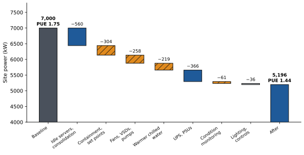
WORKED EXAMPLE 16 — What the Chennai hall gains
Site power falls from 7,000 to 5,196 kW, a saving of 1,804 kW or 25.8 %, and PUE falls from 1.75 to 1.44.
Annual energy saved = 1,804 × 8,760 = 15,800 MWh. At an assumed ₹8/kWh that is about ₹12.6 crore a year. At the Indian grid's weighted average emission factor of 0.727 t CO₂/MWh for 2023–24 [60], it avoids about 11,500 t of CO₂ a year.
Seen as capacity: the existing 7,000 kW grid connection could now supply 7,000/1.441 = 4,858 kW of IT load, that is about 1,250 kW more IT capacity without a new connection. In a city where new connections take years, that headroom may be worth more than the energy saving.
About three-quarters of the saving in this case comes from the first four steps, which need little capital apart from variable-speed drives: removing idle servers, airflow management, set points, and running redundant equipment slowly. Most of the rest comes from power equipment replaced at its normal end of life. None of it requires liquid cooling or a new building.
12.2 The road map
Most of the world's data-centre floor space will still be in use in 2030, so retrofits matter as much as new designs. Table 9 groups the measures by cost and speed. Payback periods are the author's indicative estimates for a typical air-cooled enterprise or colocation site at Indian tariffs; actual values depend on the site.
| Phase | Measure | Layer | Typical effect | Capital cost | Indicative payback |
|---|---|---|---|---|---|
| 0–6 months | Inventory; remove comatose servers | IT | Up to 20–30 % of servers in older estates | Very low | Weeks |
| 0–6 months | Blanking panels, sealing, aisle containment | Cooling | Enables higher set points | Low | Months |
| 0–6 months | Raise supply air and chilled-water set points within ASHRAE range | Cooling | Up to about 4 % of cooling energy per °C | None | Immediate |
| 0–6 months | Run N+1 fans at reduced speed; reset pump pressure | Cooling | About 30 % of fan energy (Example 5) | None to low | Immediate |
| 0–6 months | Sequence chillers and towers by measured efficiency | Cooling | Several % of plant energy | Low | Months |
| 6–24 months | Variable-speed drives or EC fans on fixed-speed equipment | Cooling | 30–50 % of that equipment's energy | Medium | 1–3 years |
| 6–24 months | Virtualise and consolidate; enable power management | IT | Up to two-thirds of affected IT power (Example 4) | Low to medium | Under 1 year |
| 6–24 months | Modular UPS, eco-mode, efficient PSUs at refresh | Power | Several % of total (Example 7) | Medium | 2–4 years |
| 6–24 months | Condition monitoring and performance tracking of cooling plant | Cooling | Holds plant near design efficiency | Medium | 1–2 years |
| 6–24 months | Data-driven set-point optimisation | Cooling | Up to 40 % of cooling energy at best [30] | Medium | 1–2 years |
| 2–5 years | Direct-to-chip liquid cooling for dense rows; warm-water loop | Cooling | About 10 % of total power (Section 6.4) | High | 3–6 years |
| 2–5 years | Replace old chillers and transformers | Cooling, power | Large where equipment is old | High | 4–8 years |
| 2–5 years | Batteries for peak shaving and flexibility contracts | Grid | Faster connection; lower demand charges | High | Depends on tariff |
| 2–5 years | Heat-reuse connection | Heat | Displaces other fuels | High | Depends on heat buyer |
| New builds | 800 V DC, closed-loop liquid cooling, siting near clean power and heat users | All | Design PUE near 1.1; low WUE | Part of project | — |
The first phase deserves emphasis. Its measures cost almost nothing, need no new equipment and are reversible, yet together they commonly recover a large part of the gap between an average site and a good one. They are held back mainly by habit, by split responsibilities between IT and facilities teams, and by the fear of change in a facility whose first duty is never to stop. A data centre that does not measure the energy use of its own cooling plant cannot manage it.
12.3 Common objections
Efficiency measures in data centres often stall not because they fail technically but because of concerns about reliability. Table 10 summarises the common objections and the safeguards that answer them.
| Objection | What the evidence and practice show | Safeguard |
|---|---|---|
| "Warmer rooms will cause failures." | ASHRAE's recommended range (18–27 °C) was set with IT manufacturers; most rooms still run well below its top [25], [27] | Raise in steps of 1 °C; watch rack inlet spread and server fan speeds |
| "Eco-mode UPS exposes the load to the grid." | Modern units transfer to the inverter within milliseconds when the supply deviates | Enable on well-conditioned feeds first; log every transfer |
| "We cannot switch off a server if we do not know what it does." | That uncertainty is the reason a quarter or more of servers do nothing [24] | Disconnect from the network first; power off after a waiting period; then remove |
| "Running all N+1 fans or pumps wears them out." | At reduced speed, bearing loads and wear are lower, not higher | Rotate duty; monitor vibration (Table 4) |
| "Liquid cooling will leak onto the servers." | Leaks are a design and maintenance issue, as in any hydronic system | Negative-pressure or leak-detecting loops; quick-disconnect couplings; commissioning tests |
| "PUE is already good enough." | PUE ignores idle IT, water and heat (Section 3.3) | Track energy per unit of work and WUE as well |
| "Efficiency only invites more demand." | True in part (Section 13.3); but it lowers cost and emissions per unit of service | Pair efficiency with disclosure and clean supply |
13. How Much of the Surge Can Efficiency Absorb?
13.1 Summary of the worked examples
| No. | Lever | Case | Result |
|---|---|---|---|
| 1 | Facility PUE | Global fleet 2024, 1.54 → 1.30 | −64.7 TWh/yr (15.6 %) |
| 2 | Model routing and mix | 1 billion queries/day at 0.3 Wh | Routing −63 %; 10 % agentic at 100×: ×10.9 |
| 3 | Idle servers | 4,000 servers, 25 % comatose, PUE 1.7 | 2,681 MWh/yr; ₹2.1 crore/yr |
| 4 | Consolidation | 100 servers at 12 % → 24 at 50 % | −66 % IT power |
| 5 | Fan affinity | Six N+1 fans at 5/6 speed, 10 MW hall | −30.6 % fan power; −1,600 MWh/yr |
| 6 | Chilled-water temperature | 7 → 18 °C, 40 °C condensing | −34 % compressor power (≈3.7 %/K) |
| 7 | Conversion chain | 100 MW IT, 83.1 % → 93.6 % | −13.6 MW; −119 GWh/yr |
| 8 | 800 V DC | 1 MW, vs 415 V AC; 200 kW rack vs 54 V | −51 % conductor loss; 219× lower rack I²R |
| 9 | Flexibility | 0.25 % curtailment | 21.9 h/yr; 100 MWh battery for 100 MW campus |
| 10 | Load smoothing | 30 MW swing, 10 MW/min ramp limit | 30 MW, 0.75 MWh storage |
| 11 | Heat reuse | 20 MW IT, heat pump COP 4 | 20 MW heat; 166 GWh/yr |
| 12 | Water | 100 MW IT, WUE 1.8 → 0.1 | 4.3 → 0.24 million L/day |
| 13 | India fleet | 57 TWh in 2030, PUE 1.6 → 1.3 | −10.7 TWh/yr; ≈1.4 GW coal |
| 14 | Chennai cluster | 305 → 900 MW IT, PUE 1.6, 80 % load | 1.8 % → 5.3 % of TN peak; PUE 1.3 saves 216 MW |
| 15 | Measurement | 120 kg/s, ΔT 6 K, 600 kW chiller | COP 5.0 (0.70 kW/TR); low ΔT 6 → 4 K: up to 3.4× pump power |
| 16 | Site case, Chennai | 4 MW IT hall, PUE 1.75, seven steps | −25.8 %; 15,800 MWh/yr; ₹12.6 crore/yr; +1,250 kW IT headroom |
13.2 An indicative estimate for 2030
To see what the levers could add up to at global scale, they are applied to the IEA's 2030 Base Case of 945 TWh. The following assumptions are the author's, chosen to be plausible rather than precise: the 2030 fleet would otherwise average a PUE of 1.45; IT energy is split equally between conventional and AI workloads; and the savings are additional to the efficiency gains already in the IEA projection. A "low" push lowers average PUE to 1.35, removes 2 % of power-chain losses, and saves 10 % of conventional and 10 % of AI IT energy through idle-server removal, consolidation, better utilisation and model-serving efficiency. A "high" push lowers PUE to 1.25, removes 5 % of chain losses, and saves 20 % and 25 % of conventional and AI IT energy. The savings are applied multiplicatively, so they do not double-count.
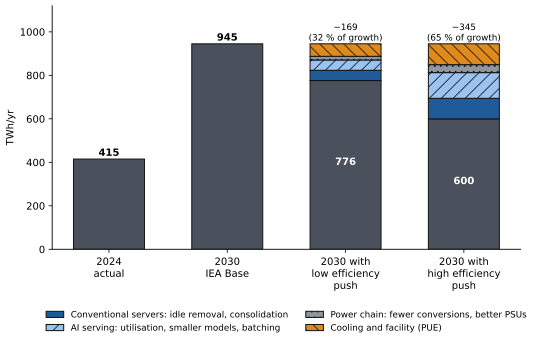
| Lever | Low push | High push |
|---|---|---|
| Conventional servers: idle removal, consolidation | 47 | 95 |
| AI serving: utilisation, smaller models, batching | 47 | 118 |
| Power chain: fewer conversions, better PSUs | 17 | 37 |
| Cooling and facility (PUE) | 58 | 96 |
| Total saving | 169 | 345 |
| 2030 consumption | 776 | 600 |
| Share of 2024–2030 growth (530 TWh) offset | 32 % | 65 % |
The result is that efficiency could plausibly offset one-third to two-thirds of the projected growth. The high case would hold 2030 consumption to about 600 TWh instead of 945 TWh, roughly the level that continued growth at the 2025 rate would reach around 2027. Two features of the estimate deserve comment. The largest wedges are in the IT and software layers, not in the facility, which confirms the point of Figure 1: savings at the bottom of the chain are multiplied by everything above. And the facility wedge, though smaller, is the most certain, because the technologies are mature and the physics is well understood.
13.3 Three caveats
Rebound. When a service becomes cheaper to provide, more of it is used. Energy per AI query has fallen by an order of magnitude a year, yet total AI electricity use has risen fast, because cheaper computation has been spent on longer reasoning, video and agents [2]. Efficiency gains therefore lower the cost of meeting a given demand but do not, by themselves, cap total demand. Whether the saved energy is banked or spent on more computation is a choice for markets and policy, not a law of engineering.
Baseline overlap. The IEA's projections already include continuing efficiency improvement. The savings in Table 12 are meant to be additional, but the boundary is uncertain, and part of what is shown may already be in the baseline.
Energy is not capacity. Annual energy savings do not automatically reduce the peak demand that a local grid must serve. For connecting new campuses, the flexibility and storage measures of Section 8, which save little energy, may matter more than the efficiency measures that save a great deal.
13.4 What efficiency cannot do
Efficiency reduces the amount of new supply needed; it does not remove the need. The IEA expects about half of the growth in data-centre demand to 2030 to be met by renewables supported by storage and the wider grid, with natural gas adding about 175 TWh, mainly in the United States, nuclear contributing a similar amount, and the first small modular reactors coming online around 2030 [1]. Emissions from the electricity used by data centres are expected to rise from about 180 to about 300 million tonnes of CO₂ by 2035 [61]. The case for efficiency is therefore not that it replaces new generation, but that it lowers how much must be built, gives grids time to build it, and makes every unit of new clean supply go further.
13.5 Looking towards 2035
The direction of the technology is reasonably clear even where the volumes are not. Rack power will keep rising, with megawatt-class racks planned from 2027 [10], which makes liquid cooling the default for new AI capacity and pushes power distribution towards 800 V DC. Warm-water cooling will make chiller-free operation possible in most climates, including India's, and will make heat reuse cheaper wherever there is a buyer. Energy per AI task will probably keep falling quickly, while the mix of tasks shifts towards heavier uses. The IEA's 2035 range, from about 970 TWh with high efficiency to more than 1,700 TWh in its Lift-Off case [6], is in effect a range of outcomes for how far efficiency keeps pace with the growth in use. Which end the world reaches depends less on any single breakthrough than on whether the proven measures described in this paper are applied across the whole fleet, old and new.
14. Recommendations
For data-centre operators. Measure energy per unit of useful work, not only PUE, and publish it. Run an annual hunt for comatose servers. Raise temperatures to the top of the ASHRAE recommended range and run water as warm as the equipment allows. Put variable-speed drives on every fan, pump and tower, and run redundant units slowly rather than keeping them idle. Monitor the condition and performance of cooling-plant machinery continuously. Design every new hall to be liquid-ready, and every new campus with heat reuse and flexible operation in mind.
For AI developers and cloud providers. Report energy per query and per training run. Route requests to the smallest model that can answer them well, set sensible defaults for reasoning length, and schedule deferrable training into hours of surplus clean power.
For utilities and regulators. Offer flexible-connection agreements that trade bounded curtailment for faster connection. Deploy grid-enhancing technologies on congested corridors. Use time-of-day tariffs that reward load shifting. Plan transmission with the data-centre pipeline in view.
For governments. Require metering and disclosure of PUE, WUE and renewable share. Set minimum efficiency standards for new facilities and water limits that vary with local water stress. Where a heat network or industrial heat user exists, require new data centres to offer their heat. In India, bring large data centres into the national energy-efficiency framework and plan data-centre parks around renewable supply and heat users.
15. Conclusions
1) The surge in data-centre electricity demand is real and fast: from about 415 TWh in 2024 to about 945 TWh by 2030 in the IEA Base Case, with 17 % growth in 2025 alone. Its sharpest effect is local, on grid connections and city networks, rather than on world supply.
2) A large part of the existing fleet runs far below proven practice. The global average PUE has hardly moved from about 1.54 in six years, while the best facilities operate near 1.1. Raising the fleet to 1.30 would alone cut consumption by 15.6 %.
3) The biggest savings lie in the IT and software layers, because each watt saved there is also saved in conversion and cooling. Comatose servers, low utilisation and inefficient model serving are management problems with inexpensive solutions.
4) In the facility, the classical laws of rotating machinery and refrigeration govern the savings: the cube law for fans and pumps, the dependence of chiller COP on temperature lift, and the multiplication of losses through the conversion chain. Variable speed, warmer water, liquid cooling, fewer conversions and higher distribution voltage each recover several per cent, and condition monitoring keeps them recovered.
5) Working with the grid, through flexibility, storage and better use of existing lines, can connect new load faster even where it saves little energy.
6) In India, where capacity is heading above 4 GW by 2030 and Chennai is the second hub, the tropical climate and water stress make warm-water liquid cooling, closed-loop heat rejection and solar-hour load shifting the natural choices. A fleet PUE of 1.3 instead of 1.6 would save about 10.7 TWh a year by 2030.
7) On the author's indicative estimate, a determined efficiency push could offset one-third to two-thirds of the growth expected to 2030. Efficiency does not remove the need for new clean generation and transmission, and cheaper computation invites more of it. But it is the fastest, cheapest and most certain resource available, and it buys the time that building new supply requires.
Appendix: Abbreviations and Symbols
| Term | Meaning | Term | Meaning |
|---|---|---|---|
| AC, DC | Alternating, direct current | PSU | Power supply unit (server) |
| CDU | Coolant distribution unit | PUE | Power usage effectiveness, (1) |
| COP | Coefficient of performance, (6) | SiC | Silicon carbide |
| CRAH | Computer-room air handler | TR | Tonne of refrigeration (3.517 kW) |
| CUE | Carbon usage effectiveness | UPS | Uninterruptible power supply |
| IT | Servers, storage and network | VSD | Variable-speed drive |
| MV, LV | Medium, low voltage | WUE | Water usage effectiveness (L/kWh) |
| N+1 | One unit beyond what the duty needs | N, Q, H, P | Speed, flow, head, power, (5) |
| PDU | Power distribution unit | Te, Tc | Evaporating, condensing temperature (K) |
| PLF | Plant load factor | u | Server utilisation, 0–1, (4) |
Acknowledgment
The author acknowledges the use of Claude (Anthropic), a large language model, for literature and data search, drafting assistance and the scripts used for the worked calculations and figures. Facts and figures were checked against the cited sources, assumed values are marked as such, and the interpretations and conclusions are the author’s own.
References
- International Energy Agency, Energy and AI, World Energy Outlook Special Report. Paris, France: IEA, Apr. 2025. [Online]. Available: https://www.iea.org/reports/energy-and-ai
- International Energy Agency, Key Questions on Energy and AI, World Energy Outlook Special Report. Paris, France: IEA, Apr. 2026. [Online]. Available: https://www.iea.org/reports/key-questions-on-energy-and-ai
- IET Engineering Exchange, “IEA warns AI data centre electricity use will triple by 2030,” 2026. [Online]. Available: https://engx.theiet.org/b/articles/posts/iea-warns-ai-data-centre-electricity-use-will-triple-by-2030
- D. Donnellan et al., “Uptime Institute Global Data Center Survey 2025,” Uptime Institute, Keynote Rep. 180, Jul. 2025. [Online]. Available: https://intelligence.uptimeinstitute.com/resource/uptime-institute-global-data-center-survey-2025
- Eco-Business, “AI’s energy appetite is outpacing deployment of AI-based climate solutions: IEA,” 2026. [Online]. Available: https://www.eco-business.com/news/ais-energy-appetite-is-outpacing-deployment-of-ai-based-climate-solutions-iea/
- International Energy Agency, “Energy demand from AI,” in Energy and AI. Paris, France: IEA, 2025. [Online]. Available: https://www.iea.org/reports/energy-and-ai/energy-demand-from-ai
- NS Energy, “Energy and AI: key findings from the IEA,” 2025. [Online]. Available: https://www.nsenergybusiness.com/analysis/energy-and-ai-key-findings-from-the-iea/
- Euronews, “Data centre energy consumption could double by 2030, straining grids, IEA warns,” 19 Nov. 2026. [Online]. Available: https://www.euronews.com/2026/11/19/data-centre-energy-consumption-could-double-by-2030-straining-grids-iea-warns
- Uptime Institute, “The growing PUE advantage of larger data centers,” UII Update 518, 6 Aug. 2026. [Online]. Available: https://intelligence.uptimeinstitute.com/resource/growing-pue-advantage-larger-data-centers
- NVIDIA, “NVIDIA 800 VDC architecture will power the next generation of AI factories,” NVIDIA Technical Blog, 2025. [Online]. Available: https://developer.nvidia.com/blog/nvidia-800-v-hvdc-architecture-will-power-the-next-generation-of-ai-factories/
- NVIDIA, “Building the 800 VDC ecosystem for efficient, scalable AI factories,” NVIDIA Technical Blog, 2025. [Online]. Available: https://developer.nvidia.com/blog/building-the-800-vdc-ecosystem-for-efficient-scalable-ai-factories
- GRI Institute, “India data centres: powering the 9 GW ambition amid grid constraints,” 2026. [Online]. Available: https://news.griinstitute.org/en/real-estate/india-data-centres-powering-the-9-gw-ambition-amid-grid-constraints
- The Star, “India’s data centre boom is straining its power grid,” 8 May 2026. [Online]. Available: https://www.thestar.com.my/aseanplus/aseanplus-news/2026/05/08/indias-data-centre-boom-is-straining-its-power-grid
- DatacenterDynamics, “IEA: Data center energy consumption set to double by 2030 to 945 TWh,” Apr. 2025. [Online]. Available: https://datacenterdynamics.com/en/news/iea-data-center-energy-consumption-set-to-double-by-2030-to-945twh
- Information technology – Data centres – Key performance indicators – Part 2: Power usage effectiveness (PUE), ISO/IEC 30134-2:2016, 2016.
- Credence Research, “What is PUE in data centers,” 2026 (summary of Uptime Institute survey series 2007–2025). [Online]. Available: https://www.credenceresearch.com/blog/what-is-pue-in-data-centers
- mGrid, “Global data center PUE stalls at 1.54,” Oct. 2025. [Online]. Available: https://mgrid.org/2025/10/01/uptime-institute-data-center-pue-stagnation-2025-liquid-cooling/
- U.S. Department of Energy, Federal Energy Management Program, “Cooling water efficiency opportunities for federal data centers.” [Online]. Available: https://www.energy.gov/cmei/femp/cooling-water-efficiency-opportunities-federal-data-centers
- Vertiv, “Quantifying data center PUE when introducing liquid cooling” (summary of the NVIDIA–Vertiv ASME paper “Power usage effectiveness analysis of a high-density air-liquid hybrid cooled data center”). [Online]. Available: https://www.vertiv.com/en-us/about/news-and-events/articles/blog-posts/quantifying-data-center-pue-when-introducing-liquid-cooling/
- H. Ritchie, “How much energy do data centers and artificial intelligence use?” Our World in Data, 20 Jul. 2026. [Online]. Available: https://ourworldindata.org/how-much-energy-do-data-centers-and-artificial-intelligence-use
- Brookings Institution, “Global energy demands within the AI regulatory landscape,” 2026. [Online]. Available: https://www.brookings.edu/global-energy-demands-within-the-ai-regulatory-landscape/
- F. Oviedo et al., “Energy use of AI inference: efficiency pathways and test-time compute,” Microsoft Research. [Online]. Available: https://www.microsoft.com/en-us/research/?p=1150769
- J. Burt, “30 percent of servers worldwide sit idle, report says” (on J. Koomey and J. Taylor, Anthesis Group, with TSO Logic data), eWeek, 15 Jun. 2015; see also Computerworld, “1 in 3 data center servers is a zombie.” [Online]. Available: https://www.computerworld.com/article/2937408/1-in-3-data-center-servers-is-a-zombie.html
- Computerworld, “A third of virtual servers are zombies” (on J. Koomey and J. Taylor, 16,000-server study), 2017. [Online]. Available: https://www.computerworld.com/article/3196355/a-third-of-virtual-servers-are-zombies.html
- ASHRAE Technical Committee 9.9, Thermal Guidelines for Data Processing Environments, 5th ed. Atlanta, GA, USA: ASHRAE, 2021.
- GreenCalculus, “ASHRAE TC 9.9 thermal guidelines for data centers” (summary of air and liquid classes, 5th ed.), 2026. [Online]. Available: https://greencalculus.com/standards/ashrae-tc-9-9-thermal-guidelines/
- ENERGY STAR, “How to balance ambient data center setpoints with IT equipment energy use.” [Online]. Available: https://energystar.gov/products/ask-the-experts/how-balance-ambient-data-center-setpoints-it-equipment-energy-use
- Vertiv, “Elevated return air temperature” (application note, Asia). [Online]. Available: https://prep.vertiv.com/499702/globalassets/products/thermal-management/in-row-cooling/vertiv_ap__elevated_return_air_temperature__-_en_-_asia_302442_0.pdf
- “AI data centers and the water use feedback loop,” arXiv:2606.21760, 2026. [Online]. Available: https://arxiv.org/pdf/2606.21760
- R. Evans and J. Gao, “DeepMind AI reduces Google data centre cooling bill by 40%,” Google DeepMind blog, 20 Jul. 2016. [Online]. Available: https://deepmind.google/blog/deepmind-ai-reduces-google-data-centre-cooling-bill-by-40/
- T. H. Norris, T. Profeta, D. Patino-Echeverri and A. Cowie-Haskell, “Rethinking load growth: assessing the potential for integration of large flexible loads in US power systems,” Nicholas Institute for Energy, Environment & Sustainability, Duke Univ., Durham, NC, USA, Rep. NI R 25-01, Feb. 2025. [Online]. Available: https://nicholasinstitute.duke.edu/publications/rethinking-load-growth
- DatacenterDynamics, “Data centers could unlock 76 GW of US grid capacity through optional curtailment – report,” Feb. 2025. [Online]. Available: https://datacenterdynamics.com/en/news/data-centers-could-unlock-76gw-of-us-grid-capacity-through-optional-curtailment-report
- S&P Global Commodity Insights, “Global data center power demand to double by 2030 on AI surge: IEA,” 10 Apr. 2025. [Online]. Available: https://www.spglobal.com/commodity-insights/en/news-research/latest-news/electric-power/041025-global-data-center-power-demand-to-double-by-2030-on-ai-surge-iea
- B. Handshy, “Duke’s ‘Rethinking Load Growth’ study is being misused in the large load interconnection debate,” Medium, 2026. [Online]. Available: https://medium.com/@brianwhandshy/dukes-rethinking-load-growth-study-is-being-misused-in-the-interconnection-debate-b7d3d981e8ca
- Meta (Facebook) Engineering, “This data center will warm their hearts, or at least heat their homes,” 26 Apr. 2018. [Online]. Available: https://tech.facebook.com/engineering/2018/4/odense-dc
- Ramboll, “Meta: surplus heat to district heating” (Tietgenbyen Energy Center, Odense). [Online]. Available: https://www.ramboll.com/en-us/technology/projects/energy/meta-surplus-heat-to-district-heating
- ScienceBlog, “A data center in Denmark gives away heat that data centers often waste,” 2026. [Online]. Available: https://scienceblog.com/data-center-denmark-gives-away-heat-data-centers/
- U.S. Department of Energy, Federal Energy Management Program, “Cooling water efficiency opportunities for federal data centers” (WUE definition). [Online]. Available: https://www.energy.gov/cmei/femp/cooling-water-efficiency-opportunities-federal-data-centers
- “Compute at scale: a broad investigation into the data center industry,” arXiv:2311.02651, 2023. [Online]. Available: https://arxiv.org/pdf/2311.02651
- Wikipedia, “Water usage effectiveness” (citing Equinix sustainability report 2025). [Online]. Available: https://en.wikipedia.org/wiki/Water_usage_effectiveness
- A. Shehabi et al., “2024 United States data center energy usage report,” Lawrence Berkeley National Laboratory, Berkeley, CA, USA, Rep. LBNL-2001637, Dec. 2024; WUE projection as summarised by Vertiv, “Optimizing water usage effectiveness for data centers.” [Online]. Available: https://www.vertiv.com/en-asia/insights/articles/educational-articles/optimizing-water-usage-effectiveness-for-data-centers/
- Climate Neutral Data Centre Pact, “White paper on data centre responsible use of water,” 2024 rev. [Online]. Available: https://www.climateneutraldatacentre.net/wp-content/uploads/2025/01/White-paper-on-DC-responsible-use-of-water-2024-Revision.pdf
- Central Public Health and Environmental Engineering Organisation, Manual on Water Supply and Treatment, 3rd ed. New Delhi, India: Ministry of Urban Development, 1999.
- Business Today, “From Mumbai to Jamnagar: India’s data centre map is rapidly expanding, shows report” (Knight Frank India Data Centre Market Update 2025), 23 Jun. 2026. [Online]. Available: https://www.businesstoday.in/technology/news/story/from-mumbai-to-jamnagar-indias-data-centre-map-is-rapidly-expanding-shows-report-538760-2026-06-23
- CRN Asia, “India’s data centre capacity crosses 1.5 GW as metro hubs drive growth” (Ministry of Electronics & IT statement), 2026. [Online]. Available: https://www.crnasia.com/india/news/2026/india-s-data-centre-capacity-crosses-1-5-gw-as-metro-hubs-drive-growth
- Business Today, “India data centre capacity to jump 30% in 2026; 500 MW supply boost expected: CBRE report,” 1 Apr. 2026. [Online]. Available: https://www.businesstoday.in/technology/story/india-data-centre-capacity-to-jump-30-in-2026-500-mw-supply-boost-expected-cbre-report-523529-2026-04-01
- IBEF, “India data centre pipeline: 3,860 MW of new capacity expected by 2030” (Cushman & Wakefield India Data Centre H1 2026 Update), 17 Sep. 2026. [Online]. Available: https://www.ibef.org/news/india-data-centre-pipeline-3-860-mw-of-new-capacity-expected-by-2030
- Asianet Newsable, “India’s data centre market doubles capacity, eyes 4 GW IT by 2030” (Savills India), Jan. 2026. [Online]. Available: https://newsable.asianetnews.com/business/indias-data-centre-market-doubles-capacity-eyes-4-gw-it-by-2030-articleshow-waiwaep
- Analytics India Magazine, “India’s data centre boom outpaces power planning” (Ministry of Power and S&P Global estimates), 2026. [Online]. Available: https://analyticsindiamag.com/ai-features/indias-data-centre-boom-outpaces-power-planning
- The Hans India, “MK Stalin announces plan to make Tamil Nadu the number one data centre destination in India,” Nov. 2021. [Online]. Available: https://www.thehansindia.com/tamilnadu/mk-stalin-announces-plan-to-make-tamil-nadu-the-number-one-data-centre-destination-in-india-717168
- Down To Earth, “The hidden cost of Chennai’s data centre boom: can the city afford AI’s water and power hunger?” 2026. [Online]. Available: https://www.downtoearth.org.in/science-technology/the-hidden-cost-of-chennais-data-centre-boom-can-the-city-afford-ais-water-and-power-hunger
- DT Next, “Happy to say no to water-guzzling data centres, Rajaa shares alternate vision,” 2026. [Online]. Available: https://www.dtnext.in/news/tamilnadu/happy-to-say-no-to-water-guzzling-data-centres-rajaa-shares-alternate-vision
- Communications Today, “Headlines of the day” (Tamil Nadu Sustainable Data Centre Policy 2026–2031), 2026. [Online]. Available: https://www.communicationstoday.co.in/?p=426149
- Mongabay India, “India bets on data centres even as water, energy use concerns mount,” May 2026. [Online]. Available: https://india.mongabay.com/2026/05/india-bets-on-data-centres-even-as-water-energy-use-concerns-mount/
- DT Next, “Heat pushes power demand in Tamil Nadu to record July high,” Jul. 2026. [Online]. Available: https://www.dtnext.in/news/tamilnadu/heat-pushes-power-demand-in-tamil-nadu-to-record-july-high
- The Statesman, “Early summer heat sharply pushes Tamil Nadu’s power demand,” Mar. 2026. [Online]. Available: https://www.thestatesman.com/india/early-summer-heat-sharply-pushes-tamil-nadus-power-demand-1503567503.html
- DT Next, “TN wind power hits record 6,578 MW, renewables meet over 42% of State’s demand,” Jul. 2026. [Online]. Available: https://www.dtnext.in/news/tamilnadu/tn-wind-power-hits-record-6578-mw-renewables-meet-over-42-of-states-demand
- DT Next, “Tamil Nadu’s wind power tops 100 MU for eighth straight day, solar output hits record high,” Jul. 2026. [Online]. Available: https://www.dtnext.in/news/tamilnadu/tamil-nadus-wind-power-tops-100-mu-for-eighth-straight-day-solar-output-hits-record-high
- Directive (EU) 2023/1791 of the European Parliament and of the Council on energy efficiency (recast), Art. 12, Official Journal of the European Union, L 231, 20 Sep. 2023.
- Saur Energy, “CEA’s CO2 baseline database: impact of RE on Indian grid emissions intensity” (Central Electricity Authority, CO2 Baseline Database for the Indian Power Sector, Ver. 20.0, Dec. 2024). [Online]. Available: https://www.saurenergy.com/solar-energy-news/ceas-co2-baseline-database-impact-of-re-on-indian-grid-emissions-intensity
- The Brussels Times, “Data centres will double global electricity demand by 2030 – IEA,” Apr. 2025. [Online]. Available: https://www.brusselstimes.com/business/1528980/data-centres-will-double-global-electricity-demand-by-2030-iea